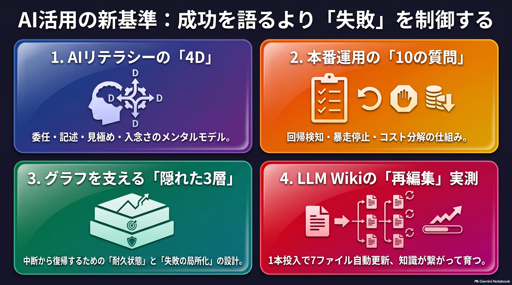
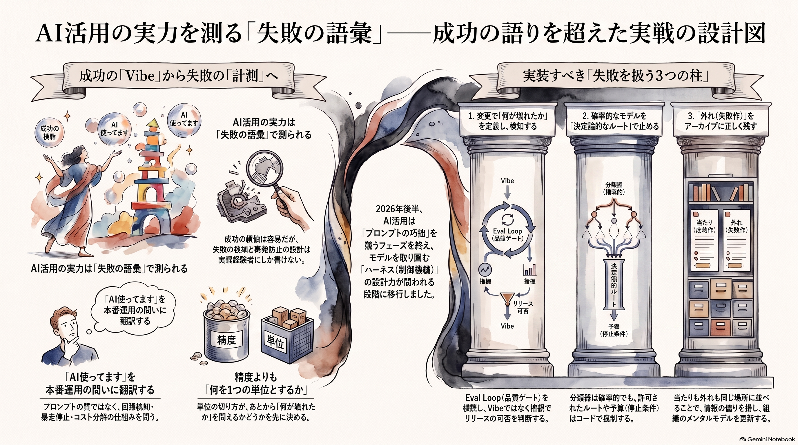

Weekly Insights: 2026-W35（2026-08-24〜08-30）
今週のホットトピック

- claude-academy AnthropicがAIリテラシーを製品の使い方から切り離して教材化 — 無料の公式学習サイト。製品別5トラックの手前に、委任・記述・見極め・入念さの4Dを教える製品非依存コースを置いた（X bookmark 27,399）。
- ai-engineer-interview-questions 「AI使ってます」を本番運用の10問に翻訳する — @voidwarriorchanの採用面接10問は、プロンプトの巧拙を一切聞かず、回帰検知・暴走停止・コスト分解というモデルを取り囲む仕組みだけを聞く（X bookmark 5,620）。
- graph-reliability-design グラフをデモから本番に変えるのは、図に描かれない3層 — @0xwhrrariが、耐久する状態・失敗の局所化・ルーティング権限という「箱と矢印が隠す部分」を設計語彙にした（X bookmark 1,740）。
- knowledge-acquisition-skill LLM Wikiの中核主張が初めて差分で実測された — NTT DATA TECHが「資料1本の追加で既存ページが書き換わる」ことをファイル差分で確認し、自作指標の撤回まで含めて公開した。
深掘り
claude-academy AnthropicがAIリテラシーを製品の使い方から切り離して教材化 公開告知は今週の素材で最大の反応でしたが、実質は数字より構成にあります。5製品の使い方トラックの手前に、製品に依存しない AI Fluency——Delegation（委任）・Description（記述）・Discernment（見極め）・Diligence（入念さ）の4D——と「AIの能力と限界の正確なメンタルモデルを作る」コースが独立に置かれました。ツールの操作を覚えても委任の質は上がらない、という前提が公式教材の設計そのものに現れた形で、組織にAI活用を広める立場からは「何を教えるか」の公式の雛形が手に入ったことになります。
ai-engineer-interview-questions 「AI使ってます」を本番運用の10問に翻訳する @voidwarriorchanの10問は、変更で何が壊れたと言えるか（Q3）・止まらなくなったときどう止めるか（Q6）・最も危険だった失敗を検知から再発防止まで一本で語れるか（Q10）と、本番でしか遭遇しない問いだけを並べます。要はQ9で、「どのモデルで費用が増えたか」という答えをわざわざ否定し、機能・顧客・処理段階の軸で分解させる。モデル別の請求額はダッシュボードを見れば出ますが、機能軸の分解は最初から属性を付けて計測していないと事後には作れません。面接リストの形をした、本番に必要な計測の設計図と読めます。
graph-reliability-design グラフをデモから本番に変えるのは、図に描かれない3層 @0xwhrrariの中心命題は「信頼性は全ノードが成功することを願うところからは来ない。1つが成功しなかったときグラフが何をするかを決めるところから来る」です。具体策は3方向で、ノード間でトランスクリプトの語り直しでなくアーティファクトへの参照を渡す・書き込みを冪等にする・「分類器は確率的、許可されたルートは決定論的」と権限の線を引く。今週 ai-engineer-interview-questions と相互リンクが張られたとおり、面接10問の実行の安全の層（Q5〜Q7）に答えるための語彙集が先に存在していた、という関係になっています。
knowledge-acquisition-skill LLM Wikiの中核主張が初めて差分で実測された NTT DATA TECHがAWS SamplesのLLM Wiki実装を使い、「新しい資料が既存の知識まで再編集する」という主張をdiffで押さえました（資料1本で既存7ファイル更新・wikilink出現 159→207・同一質問への回答構造も変化、いずれもN=1と明記）。この記事の最良の部分は測定の扱いです。同梱UIのKnowledge Graphが0 edgesになった原因を「LLMの規約違反」と断定せず、リンクを書く側と解決する側の契約が未定義だったと特定し、さらに自分に都合の良い指標だった orphan=0 を「index.mdの網羅性を測っているだけ」と検算して自ら主要指標から外しました。
今週の中心テーマ
AI活用の実力は、成功を語る語彙ではなく、失敗を扱う語彙——何が壊れたと言えるか・どう止めるか・外れをどこに残すか——で測られる段階に入った。

同じ形が立場の違う4者から独立に出ています。採用側は「最も危険だった失敗」を一本で語れるかで経験の真偽を見分け（ai-engineer-interview-questions）、設計側は1ノードが死んだとき損害がどこで止まるかを先に決め（graph-reliability-design）、検証側は自作の指標が何を測っているかを検算して撤回まで公開し（knowledge-acquisition-skill）、発信側は当たった案件と外れた案件を同じアーカイブに並べます（pieter-levels）。Anthropicの公式教材までが、できることの一覧ではなく「能力と限界のメンタルモデル」と見極め（Discernment）をAI基礎の中核に置きました（claude-academy）。成功の語りは模倣が簡単になった一方、失敗の記録と計測の設計は実際に運用した者にしか書けない——それが「AI使ってます」がもう情報にならない時代に残った判別器だ、という読みです。
先週（2026-W34）の「何を1つの単位として持つか」が、あとから問えることを決める境界の話だったのに対し、今週はその続きの工程に当たります。単位を切って問えるようにしても、失敗と実測を残す設計がなければ答えは自己申告に戻る。なお「4者が独立に同じ形」というまとめ自体はこのwiki側の合成で、各著者が互いを参照している証拠はありません。
根拠ページ
- claude-academy（→ 今週のホットトピック#1）
- ai-engineer-interview-questions（→ 今週のホットトピック#2）
- graph-reliability-design（→ 今週のホットトピック#3）
- knowledge-acquisition-skill（→ 今週のホットトピック#4）
- pieter-levels — 当たりも外れも本人の分類つきで同じ場所に並ぶ個人開発アーカイブ levels.io。@yossy_indieが「成功した数本だけを見て判断せずに済む」一次情報として紹介（X bookmark 1,548）
- claude-code-launch-directory — @yasu_ai_goodによる、起動フォルダが到達範囲・読まれるCLAUDE.md・効く設定を同時に決めるという整理。精度のぶれを「プロンプトを長くする」でなく
/contextでの診断から始める手順が、今週のテーマと同じ向きを向いている
既存wikiとの接続
- ai-engineer-roadmap — 「ハーネスこそが仕事の本体」を学習ロードマップとして展開した既存ページ。今週の面接10問がその到達点の測定装置、Claude Academy がその公式教材版に当たり、学ぶ→測るの三角形が閉じた
- eval-loop — 生成→採点→閾値未満を止める品質ゲート。面接10問の品質の測定の層（Q3・Q4）と、グラフ設計の「検証はエッジに置く」の両方が、この既存ページの実装を前提にしている
- llm-wiki — このvault自身の型。「既存ページまで更新される」という中核主張に、今週初めて外部の実測値が付いた
sugeta-san への問い
このvaultのingestは「既存知識の再編集」をどれだけ起こせていますか——実測で答えられますか。
→ 今回の生成中に wiki/log.jsonl を集計してみました。pagesを持つingest記録318件で create 329・update 333、つまり1ソースあたり平均update約1件です。NTT DATA TECHの検証では1資料で内容ページ5件が更新されており、開きがあります。さらに、直近で最大だったupdate 8件の束（2026-08-15）は、中身を見ると前回張り漏れた逆リンクの補完でした。updateの多くが本文の再編集でなくリンク追加だとすると——全件を分類したわけではない仮説です——LLM Wikiの看板である「新資料が既存知識を再編集する」は、このvaultではまだ実測で裏打ちされていません。
今週の小アクション（5分）
直近のingestのupdateが「本文の再編集」か「リンク追加」かを見分けてください。次のコマンドで直近のupdate内訳がsummary付きで出ます（動作確認済み）:
python3 -c "
import json
for l in open('wiki/log.jsonl'):
d = json.loads(l)
if d.get('op') != 'ingest': continue
for p in d.get('pages', []):
if p.get('action') == 'update':
print(d['ts'][:10], p['path'].replace('wiki/',''), '—', p.get('summary','')[:60])
" | tail -20
summaryが「逆リンクを追加」ばかりなら、上の問いの答えは出ています。
いますぐAIと一緒に（コピペ）
以下をそのまま Claude Code に貼ると、今週のテーマ「失敗を扱う語彙」でこのリポジトリの自動化を自己診断できます。
このリポジトリのAI自動化（launchd ingest → wiki生成 → weekly生成）を、
本番運用能力の面接10問で自己診断してください。
1. wiki/concepts/ai-engineer-interview-questions.md の10問それぞれについて、
「実測で答えられる / 設計はあるが実測がない / 未整備」の3段階で判定する
2. 判定の根拠には必ず実ファイル・実ログのパスを添える（推測で「あるはず」と書かない）
3. 未整備のうち Q3（変更時の回帰検知）と Q6（暴走時の停止・予算）について、
scripts/ と .claude/skills/ の現状に即した最小の打ち手を1つずつ提案する
設計語彙は wiki/concepts/graph-reliability-design.md
（冪等な書き込み・チェックポイント・予算・「許可されたルートは決定論的」）を参照してください。
さらに読むべきページ
- pieter-levels — 「外れも並べる」を発信のレベルで10年以上続けている実例。2026年後半の「インディーハッカー絶滅」論と自身の収益記録が同じアーカイブに同居する緊張感も含めて
- claude-code-launch-directory — 「ちゃんと設定したのに効かない」を診断から始める実務手順。長時間セッションの後半で作法が崩れる原因は圧縮後に自動で戻るのが上位のCLAUDE.mdだけという仕様にあり、このvaultの構成にも直接効く